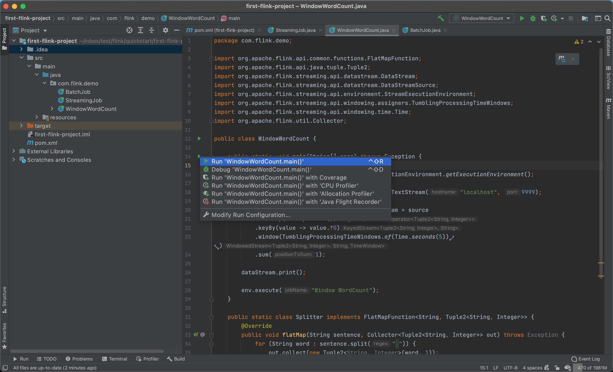
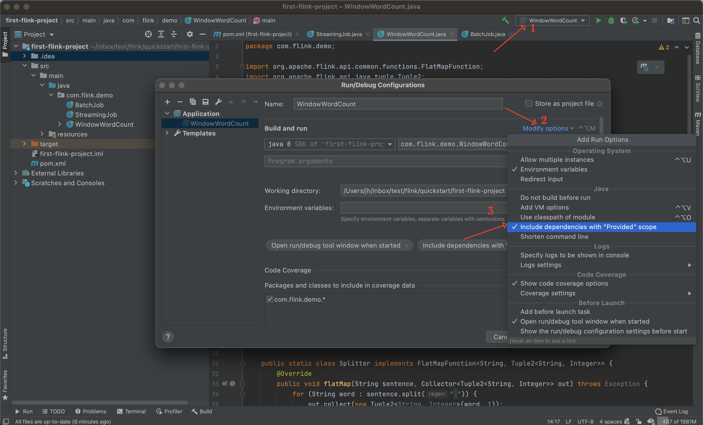
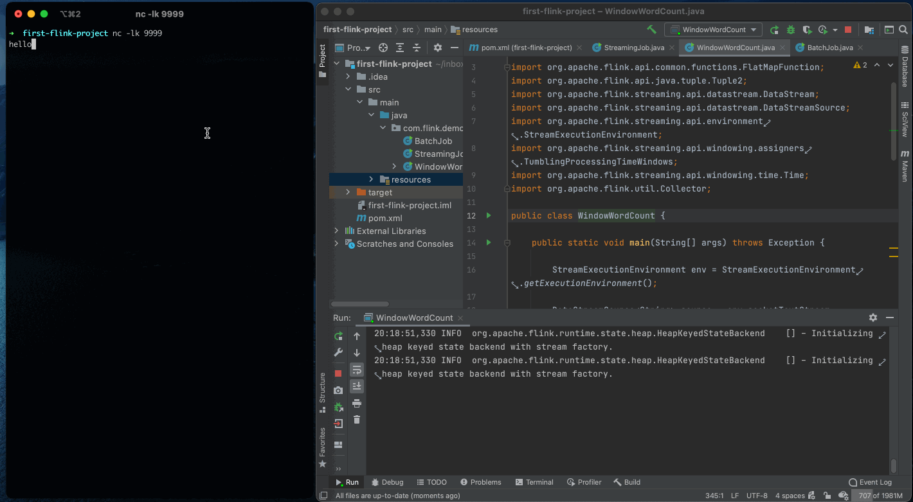
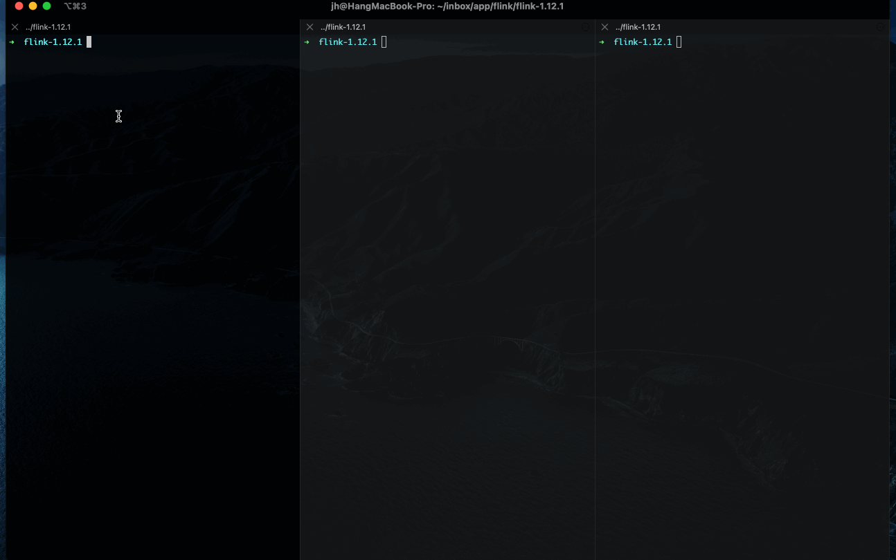
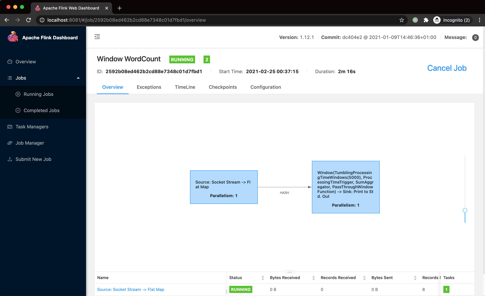

Apache Flink 是一个流计算引擎。本文主要介绍如何从零编写一个统计单词出现次数的 Flink 应用（后面简称为 WordCount）。由于 Flink 概念很多，对初学者会造成极大困扰，所以本文不会涉及太多概念，即使没有 Flink 基础也可以完成本文的示例应用。
开发环境准备 🔗
要编写 Flink 应用，需要安装 Java （Java 8 或 Java 11） 和 Maven。
你可以使用下面的命令查看当前已安装的 Java 版本信息：
$ java -version
java version "1.8.0_181"
Java(TM) SE Runtime Environment (build 1.8.0_181-b13)
Java HotSpot(TM) 64-Bit Server VM (build 25.181-b13, mixed mode)
使用下面的命令查看当前已安装的 Maven 版本信息：
$ aliyun mvn -version
Apache Maven 3.6.3 (cecedd343002696d0abb50b32b541b8a6ba2883f)
Maven home: /usr/local/Cellar/maven/3.6.3_1/libexec
Java version: 1.8.0_181, vendor: Oracle Corporation, runtime: /Library/Java/JavaVirtualMachines/jdk1.8.0_181.jdk/Contents/Home/jre
Default locale: en_CN, platform encoding: UTF-8
OS name: "mac os x", version: "10.16", arch: "x86_64", family: "mac"
此外，我也建议你使用 IntelliJ IDEA 来编写 Java 应用，我当前的版本是 2020.3.2。
项目初始化 🔗
我们可以使用 Flink Maven Archetype 快速创建一个项目。该模板中包含了 Flink 应用需要的 flink-streaming-java、flink-clients 等依赖。
$ mvn archetype:generate \
-DarchetypeGroupId=org.apache.flink \
-DarchetypeArtifactId=flink-quickstart-java \
-DarchetypeVersion=1.12.0 \
-DgroupId=com.flink.demo \
-DartifactId=first-flink-project \
-Dversion=0.0.1-SNAPSHOT \
-Dpackage=com.flink.demo \
-DinteractiveMode=false
你可以将上面的 groupId、artifactId、package 等参数改为你喜欢的值。
使用上面参数生成的项目结构如下：
$ tree first-flink-project
first-flink-project
├── first-flink-project.iml
├── pom.xml
└── src
└── main
├── java
│ └── com
│ └── flink
│ └── demo
│ ├── BatchJob.java
│ └── StreamingJob.java
└── resources
└── log4j2.properties
其中 StreamingJob.java 和 BatchJob.java 是 Flink 模板中默认的流处理任务和批处理任务代码示例，我们先不管它。
接下来我们使用 IntelliJ IDEA 导入项目，你也也可以使用 idea 命令直接打开项目。
$ idea first-flink-project
然后我们简单修改一下 pom.xml，删除其中的 lifecycle-mapping 插件，这是为了解决 Eclipse 报错而添加的，在 IntelliJ IDEA 中不需要。
编写 Flink 代码 🔗
在 src/main/java/com/flink/demo 中添加一个 WindowWordCount.java 类，输入下面的这段代码。这就是 WordCount 应用的所有代码了，现在看不懂没有关系，后面我会一一讲解。
package com.flink.demo;
import org.apache.flink.api.common.functions.FlatMapFunction;
import org.apache.flink.api.java.tuple.Tuple2;
import org.apache.flink.streaming.api.datastream.DataStream;
import org.apache.flink.streaming.api.datastream.DataStreamSource;
import org.apache.flink.streaming.api.environment.StreamExecutionEnvironment;
import org.apache.flink.streaming.api.windowing.assigners.TumblingProcessingTimeWindows;
import org.apache.flink.streaming.api.windowing.time.Time;
import org.apache.flink.util.Collector;
public class WindowWordCount {
public static void main(String[] args) throws Exception {
StreamExecutionEnvironment env = StreamExecutionEnvironment.getExecutionEnvironment();
DataStreamSource<String> source = env.socketTextStream("localhost", 9999);
DataStream<Tuple2<String, Integer>> dataStream = source
.flatMap(new Splitter())
.keyBy(value -> value.f0)
.window(TumblingProcessingTimeWindows.of(Time.seconds(5)))
.sum(1);
dataStream.print();
env.execute("Window WordCount");
}
public static class Splitter implements FlatMapFunction<String, Tuple2<String, Integer>> {
@Override
public void flatMap(String sentence, Collector<Tuple2<String, Integer>> out) throws Exception {
for (String word : sentence.split(" ")) {
out.collect(new Tuple2<String, Integer>(word, 1));
}
}
}
}
这段代码的主要功能就是从 Socket 中读取数据（即单词），然后每 5s 统计一次所有单词出现的次数，然后输出。
WordCount 应用的完整代码可以在这里看到 first-flink-project 。
在讲解代码前，我们可以先运行看看效果。
运行 Flink 应用 🔗
首先我们使用 netcat 启动一个 Socket 输入流：
$ nc -lk 9999
然后通过 IntelliJ IDEA 来运行 WindowWordCount 类：

第一次运行可能有报错 NoClassDefFoundError ：
Error: A JNI error has occurred, please check your installation and try again
Exception in thread "main" java.lang.NoClassDefFoundError: org/apache/flink/api/common/functions/FlatMapFunction
at java.lang.Class.getDeclaredMethods0(Native Method)
at java.lang.Class.privateGetDeclaredMethods(Class.java:2701)
at java.lang.Class.privateGetMethodRecursive(Class.java:3048)
at java.lang.Class.getMethod0(Class.java:3018)
at java.lang.Class.getMethod(Class.java:1784)
at sun.launcher.LauncherHelper.validateMainClass(LauncherHelper.java:544)
at sun.launcher.LauncherHelper.checkAndLoadMain(LauncherHelper.java:526)
原因在 pom.xml 中， flink-streaming-java 和 flink-clients 这两个依赖的 scope 是 provided，所以它们不会被打包到 jar 中。这些依赖是 flink 的核心依赖，当把 jar 包部署到 flink 上运行时，运行环境中已经内置这些依赖了，所以我们也不需要把它们打包到 jar 中。
解决这个报错的办法就是在 IntelliJ IDEA 运行配置中勾选 Include dependencies with "Provided" scope。

成功运行后，就可以输入数据进入测试了。

如图所示，你可以看到输出了 hello world 等单词出现的次数。
代码分析 🔗
创建执行环境 🔗
main 方法中的第一行代码用于创建执行环境。执行环境可以用来定义任务属性（如并发度）、创建数据源以及启动任务。
StreamExecutionEnvironment env = StreamExecutionEnvironment.getExecutionEnvironment();
创建数据源 🔗
接下来就是创建数据源，数据源的作用是从外部系统如 Kafka、Rabbit MQ 或日志服务等系统中接收数据，然后将数据传输到 Flink 任务中。在 WordCount 应用中，我们从本地端口号为 9999 的 socket 中读取数据。env.socketTextStream 数据源默认是按行读取输入的数据，也就是说在 netcat 启动的输入流中输入一行数据，按下回撤（即 \n 字符），env.socketTextStream 就会读取这一行数据。当然，你也可以自定义数据的分隔符。
DataStreamSource<String> source = env.socketTextStream("localhost", 9999);
有了数据后，我们就可以对数据进行处理。Flink 提供了大量的 算子（operators） 用来处理数据，比如 Map、FlatMap、KeyBy、Reduce、Window 等等。
处理数据 - 转换 🔗
数据处理第一步就是使用 Flink 的 flatMap 算子处理输入的数据。我们使用了自定义的 Splitter 类将输入的一行数据按空格拆分为多个数据。因为我们可能在一行中输入多个单词。
public static class Splitter implements FlatMapFunction<String, Tuple2<String, Integer>> {
@Override
public void flatMap(String sentence, Collector<Tuple2<String, Integer>> out) throws Exception {
for (String word : sentence.split(" ")) {
out.collect(new Tuple2<String, Integer>(word, 1));
}
}
}
Splitter 类继承了 FlatMapFunction 类，然后重载了 flatMap 方法。flatMap 有两个参数，第一个参数 sentence 就是输入的一行数据，out 是用来保存处理结果的变量 。out 中的数据类型是 Tuple2<String, Integer> ，最终我们输入的所有数据都会保存在 out 中。
举个例子，假设输入的第一行数据（也就是 sentence）为 hello hello world，则当前 out 为：
(hello, 1)
(hello, 1)
(world, 1)
接下来再输入一行新的数据 java flink，则最新的 out 为：
(hello, 1)
(hello, 1)
(world, 1)
(java, 1)
(flink, 1)
处理数据 - 分组 🔗
使用 flatMap 处理了输入的数据后，得到是输入的所有单词。要统计单词出现的次数，接下来我们还需要对单词进行分组，这时就可以使用 flink 的 keyBy 算子。
.keyBy(value -> value.f0)
上面是 Lambda 的写法， 可能不方便理解。上面这行代码就等同于下面的代码：
.keyBy(new KeySelector<Tuple2<String, Integer>, Object>() {
@Override
public String getKey(Tuple2<String, Integer> value) throws Exception {
return value.f0;
}
})
这下看起来应该就清晰很多了，在 keyBy 中，我们主要是实现了 KeySelector 类并重载了 getKey，最终返回分组的 key，也就是输入的单词，这样 keyBy 算子就会根据单词去分组。
处理数据 - 窗口 🔗
在 WordCount 应用中，我们的需求是 5s 统计一次单词次数，所以需要用到 Flink 的窗口。这里我们使用的 TumblingProcessingTimeWindows ，代码如下：
.window(TumblingProcessingTimeWindows.of(Time.seconds(5)))
其作用是每 5s 对数据流做一次切分。
可能理解起来比较抽象，举个例子，假设输入的单词及时间如下：
2021-01-24 00:00:00 hello
2021-01-24 00:00:00 hello
2021-01-24 00:00:01 word
2021-01-24 00:00:06 java
2021-01-24 00:00:07 flink
2021-01-24 00:00:07 hello
2021-01-24 00:00:13 hello
则会生成 3 个窗口（window），分别如下：
window1: [ (hello, 1), (hello, 1), (wold, 1) ]
window2: [ (java, 1), (flink, 1), (hello, 1) ]
window3: [ (hello, 1) ]
处理数据 - 聚合 🔗
对数据按照时间窗口进行分组后，接下来就可以对每个窗口中每个分组的单词进行聚合了。在 WordCount 应用中，聚合就是对单词出现次数求和，求和也很简单，使用 sum 就可以：
.sum(1)
sum 会作用域于每个 window，这样就可以分别求出每个 window 中的单词出现次数，我们就可以计算出 5s 内每个单词出现的次数了。
输出结果 🔗
数据处理完毕后，我们就可以将数据输出。通常我们会将数据输出到另一个外部系统，比如 Kafka、Rabbit MQ 或日志服务等。
这里我们直接使用 print 将数据打印出来。
dataStream.print();
运行 Flink 任务 🔗
最后，我们通过 env.execute() 方法来运行任务。
env.execute("Window WordCount");
其参数是任务名称。
Flink 任务只有在 execute() 被调用后，才会提交到集群或本地计算机上执行。execute() 调用前，Flink 只是生成了数据处理流图。
在本地 Flink 集群运行任务 🔗
现在我们已经可以通过 IntelliJ IDEA 来运行应用，你肯定也很想知道如何在本地 Flink 集群中运行 WordCount 应用。
其实也很简单。
编译代码 🔗
编译代码前，需要先修改 pom.xml 中的 mainClass。生成项目时默认是 com.flink.demo.StreamingJob，我们需要将其修改为 com.flink.demo.WindowWordCount ，这样通过 java -jar <name>.jar 命令执行 jar 包时，就会运行 WindowWordCount 类了。
<transformers>
<transformer implementation="org.apache.maven.plugins.shade.resource.ManifestResourceTransformer">
<mainClass>com.flink.demo.WindowWordCount</mainClass>
</transformer>
</transformers>
修改后，使用 maven 编译项目：
$ mvn clean package
编译成功后，会在 target 目录下生成 first-flink-project-0.0.1-SNAPSHOT.jar 文件。
启动 Flink 集群 🔗
接下来我们在本地启动 Flink 集群。如果你之前已经启动了，则不用执行该步骤了。
启动集群步骤可以参考 本地模式安装 ，下面我简单讲解一下。
首先需要先下载 Flink 集群的代码，你可以在这个页面 Flink Downloads 找到所有版本的 Flink。
下载后解压：
$ tar -xzf flink-1.12.1-bin-scala_2.11.tgz
$ cd flink-1.12.1
然后启动集群。flink 代码中附带了一个 bash 脚本，可以用来启动集群。
$ ./bin/start-cluster.sh
Starting cluster.
Starting standalonesession daemon on host.
Starting taskexecutor daemon on host.
提交任务 🔗
在本地启动 Flink 集群后，然后我们就可以通过 flink run 命令将 WordCount 任务提交到本地集群了：
$ ./bin/flink run jobs/first-flink-project-0.0.1-SNAPSHOT.jar
jobs/first-flink-project-0.0.1-SNAPSHOT.jar 是前面编译后的 jar 包，我将其移到了 jobs 目录下。
任务启动后，可以在 log/ 目录下查看对应日志。

此外，你也可以通过 Web UI 来管理集群，在浏览器打开 localhost:8081 就可以看到管理界面。

停止集群 🔗
任务运行结束后，你可以通过 stop-cluster.sh 这个脚本来停止 flink 集群。
$ ./bin/stop-cluster.sh
总结 🔗
至此，我们的 WordCount 应用就开发并部署完成了。Flink 本身的概念非常多，本文基本没有涉及概念介绍，只是讲解了程序运行过程，希望通过本文的介绍， 能让你对 Flink 有个初步的印象。这样接下来再去接触 Flink 的概念，应该就会容易一些了。